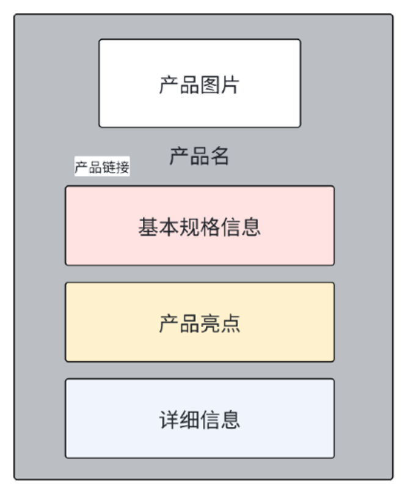
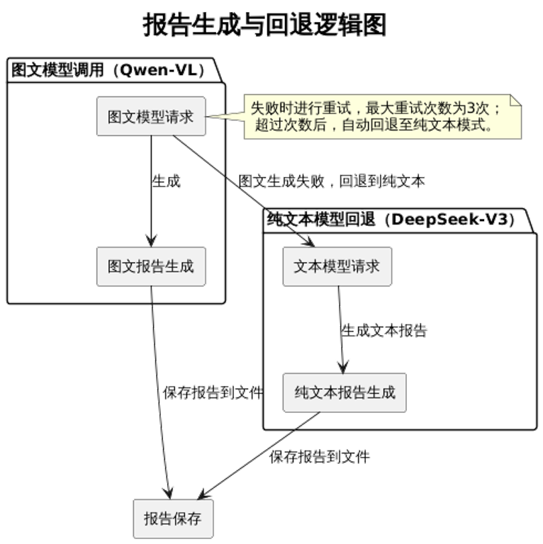
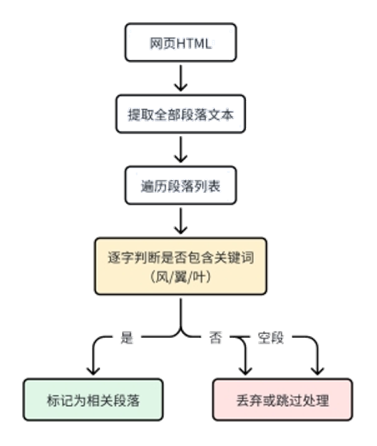

企业实习中期检查报告【2025.04—2025.05】
by 郑佳彤
说明：本报告按照参与项目顺序成文，每个项目内包含完成情况、需求分析、设计与实现、复杂问题与解决方案、知识技能学习情况。
实习的主要任务集中在视觉AI设计与大语言模型的应用与优化上。结合企业对AI生成内容的需求，我参与了以下三个核心任务，并取得了一定的进展。
图1-实习中期项目进度规划图
任务1:AIGC工具链建设
完成情况
Midjourney教程与图文梳理
完成了Midjourney的功能教程部署，包括如何使用--s（风格化强度）、--chaos（随机性）、--no（排除项）等命令来控制图像生成的不同特性。
图2-midjourney教程部署
通过视频和图文教程，梳理了这些命令的实际应用场景和使用方法，教程内容为公司提供了系统的操作指南，确保员工能够快速掌握Midjourney的基本功能。
Prompt与视频教程：Bluetti|智绘库
图文教程【内部文档】：Midjourney图文补充教程
Stable Diffusion工作流搭建与优化
搭建并优化了Stable Diffusion的ComfyUI工作流，通过对工作流中的各个节点进行参数调节，实现了图像质量的优化。在优化过程中，特别关注风格化控制、细节呈现和图像生成速度，确保工作流能够在多个设计场景下稳定且高效地输出图像。

图3-Stable Diffusion的ComfyUI工作流示例
企业校招AI宣传视频
使用AI生成视频工具（可灵、Vidu等）制作创意性校招宣传图频。
需求分析
功能需求
Midjourney 教程与图文梳理
编制覆盖Midjourney核心控制参数的教程，包含
--s（风格化强度）、--chaos（随机性）、--no（排除项）等命令使用方法；教程包括图文说明与视频讲解两种形式，部署至内部知识平台，支持员工自助学习；
各参数均配有生成图像的案例解释，结合不同设计任务明确使用场景；
教程内容结构化，便于后期迭代维护与更新。
Stable Diffusion ComfyUI工作流搭建与优化
通过ComfyUI框架搭建基础工作流，包括：提示词输入、CLIP文本编码器、K采样器、VAE图像解码器等组件；
支持风格切换与分辨率调整，适配不同图像生成任务（概念图、产品图、场景图）；
插件参数优化包括Prompt文本强度控制、分辨率约束、曲线控制、图像混合方式、背景处理，确保图像生成的稳定性、风格一致性与整体画面质量。
输出图像具备高稳定性与一致性，适配多部门使用需求。
性能需求
图像生成速度：高分辨率图像生成时，通过节点并行处理与GPU内存调度，减少图像的生成延迟；
系统稳定性：多插件工作流下，控制内存使用率，避免因超负载导致的崩溃；
图像一致性与质量：降低微调后图像在内容还原、细节精度和风格控制方面的风格偏移率。
其他需求
定期给部门成员分享AIGC工具更新情况；
为设计部及其它部门需要AIGC工具的同事提供相关学习资料和案例培训。
设计与实现
总体设计
本项目工具链总体结构分为三层：
教学交互层：部署Midjourney图文教程和培训视频；
图像生成层：搭建基于 Stable Diffusion ComfyUI的稳定图像生成工作流；
参数管理与优化层：配置提示词模板与风格调优参数，控制图像一致性和输出质量。
图4-AIGC工具链系统架构图
详细设计
子系统 A：教程知识平台
教程内容围绕 Midjourney 核心参数展开，共两个模块：
命令参数模块：重点讲解
--s、--chaos、--no等控制生成行为的命令；风格控制模块：结合应用场景展示提示词与参数对生成风格的具体影响。
教程输出形式包括：
图文教程（共享文档部署于公司钉盘）；
视频教程（嵌入公司平台，涵盖实操与案例演示）。
教程平台支持版本维护、内容迭代。
子系统 B：Stable Diffusion 图像生成系统
保证ComfyUI基础工作流生成逻辑；
图5-ComfyUI工作流基本逻辑
插件模块化管理，支持扩展节点如图像混合、超分辨放大等；
参数集中在配置面板，可根据任务切换分辨率、风格类型等。
子系统 C：参数模板与风格调优模块
预设多种场景Prompt模板，如“工业产品渲染”、“科技感人像”、“风景背景”；
参数调优模板包括采样方法（euler、dpm++）、采样步数、宽高比等；
插件细节调节涵盖：图像对比度、背景模糊、提示词分权重设置。
复杂问题与解决方案
工作流节点间依赖复杂，图像输出不确定性强 【解决中】
问题分析
ComfyUI 是一个基于节点的图像生成工具，虽然高度灵活，但也带来了以下问题：
节点依赖顺序强：Prompt → 编码器 → 采样器 → 解码器，如稍有错误顺序或参数失配即可能失败；
插件组合不确定：例如多种风格叠加可能产生“风格漂移”；
参数过度自由：导致不同用户出图风格不一致，难以复现。
解决方案
建立标准化工作流模板库
提取高频使用场景（如产品图、人物概念图）中的稳定流程；
每类流程封装为
.json工作流模板供调用；模板中预置关键插件组合、输入字段约束与默认参数范围。
引入节点合法性校验机制
编写工作流校验脚本，检测是否存在：
节点遗漏（如无 UNet 输出）；
插件组合冲突（如超分模块与图像融合模块逻辑冲突）；
Prompt 权重过高/过低导致模型崩溃。
# 节点合法性校验示例函数def validate_workflow(workflow):errors = []# 校验工作流节点顺序是否正确if "Prompt" not in workflow["plugins"]:…if "CLIP" not in workflow["plugins"]:……if "VAE" not in workflow["plugins"]:errors.append("缺少 'VAE' 节点")# 检查插件组合是否冲突if "SuperResolution" in workflow["plugins"] and "ImageFusion" in workflow["plugins"]:……# 返回校验结果if len(errors) > 0:return False, errorselse:return True, "工作流有效"检查是否有必需的节点（如
Prompt、CLIP、UNet、VAE）；检查插件组合是否存在冲突（例如超分与图像融合的组合问题）；
校验
prompt_weight（提示词权重）是否在合理范围内。
可行性研究
| 讨论维度 | 内容说明 |
|---|---|
| 安全性 | 模板机制避免参数误操作导致服务奔溃；合法性校验可防止恶意Prompt注入。 |
| 环境约束 | 方案本地部署为主，硬件资源开销小于重新训练模型。 |
| 法律合规 | 不涉及数据抓取或内容违法风险。 |
| 经济性 | 一次性开发成本低（模板配置 + 校验脚本）；显著提高出图质量稳定性与复现性，节约运营人力成本。 |
该方案通过技术与规则结合，实现了流程稳定化与结果可控性，大幅提升图像生成一致性与安全性，是合理且经济可行的优化路径。
高分辨率图像输出存在性能瓶颈与资源管理问题 【待解决】
问题分析
高分辨率生成（如1024×1024及以上）通常带来以下挑战：
显存占用激增，导致 ComfyUI 直接崩溃；
插件串行执行效率低，尤其在图生图、超分流程中。
解决方案
引入 Lazy Evaluation（延迟执行）+ 分批运行策略
将所有高分节点（如超分插件、背景合成）移至流程尾部；
开启 ComfyUI 的 GPU usage 动态探测，运行前检查显存占用状态，超过阈值则排队延迟处理。
使用显存优化插件和分块渲染插件（如 TileSampler）
高分图像拆分为多个小图块（tile），逐块处理再拼接；
显著降低单次占用显存，可在中端显卡上生成大图。
可行性研究
维度 内容说明 安全性 有效防止内存溢出、驱动崩溃，保障图像生成系统稳定运行。 环境约束 显卡资源使用得到充分管理，避免系统闲置或瞬间爆发负载。 法律合规 所有插件使用均为开源合法，无违规访问或资源争用行为。 经济性 无需更换硬件，仅通过算法与流程优化实现高分输出支持；提升产图质量的同时显著节省硬件投资。
该方案在保证图像质量的同时，有效解决了生成性能瓶颈问题，兼顾了系统稳定性与资源经济性，符合长期可持续部署目标。
知识技能学习情况
深入学习了Midjourney和Stable Diffusion的高级功能，如风格化强度（
--s）、随机性控制（--chaos）等技巧，根据不同需求调整生成图像的风格和细节。在Stable Diffusion中，优化了ComfyUI工作流，调整了多个插件参数，提升了图像生成效果并确保生成符合设计要求。
任务2:竞对新品分析系统
完成情况
在此任务中，构建基于Scrapy的分布式爬虫系统，实现Anker新品数据全维度采集，并将这些数据通过大语言模型生成详细的产品报告。目标是通过自动化的方式，帮助公司分析市场竞争态势，并为管理层提供及时的产品信息。
爬虫框架搭建： 使用Scrapy成功爬取竞争对手的产品数据，包括产品名称、价格、品牌、技术亮点、技术规格等信息；
数据库集成： 正在对收集到的产品数据进行更有效的存储和管理，通过SQLAlchemy将数据保存在SQLite数据库中；
HTML报告生成： 通过调用SiliconFlow API，将收集到的产品数据生成标准化的HTML报告。

图6-产品HTML报告示例
API优化： 优化API调用的效率，减少生成报告的时间，确保模型能够快速响应并生成所需报告。
需求分析
功能需求
图7-系统流程总览图
系统流程总览如图，可细分为以下功能环节。
分布式产品爬虫系统
基于Scrapy构建分布式爬虫框架，支持按品牌、系列、发布时间分类抓取；
可提取字段包括：产品名称、价格、品牌、发布日期、SKU、产品链接、技术亮点、技术参数、图片URL等；
支持URL自动去重、分页递归爬取与错误重试机制。
数据存储与管理
使用SQLAlchemy将结构化数据写入SQLite数据库；
每次更新记录创建时间，支持后期数据对比与追踪；
提供统一接口供报告生成系统调用数据。
报告生成系统
调用SiliconFlow API，将产品数据提交给图文大语言模型；
基于Prompt模板生成HTML结构的产品分析报告，包含头图、价格、亮点、参数、链接等信息；
报告自动命名与分类，支持文件落地存储及日志追踪。
性能需求
支持产品页面的并发爬取，单次全量爬取控制在5分钟以内；
API异常处理逻辑支持重试+fallback保障内容生成；
数据需要全部成功写入。
其他需求
所有抓取需符合目标网站robots协议与合规性规范；
系统日志应记录爬虫异常、API响应状态、报告保存路径等信息。
设计与实现
总体设计
本系统总体结构分为三个模块：
数据采集模块（Scrapy）
数据存储模块（SQLAlchemy）
报告生成模块（API调用+模板渲染）
图8-竞对产品分析系统架构图
详细设计
子系统 A：Scrapy爬虫系统
识别产品页面：通过在产品页面中查找带有
NEW标签的产品，从而实现新产品的精准采集；精准定位 DOM 元素：利用 XPath 和 CSS 选择器准确地提取产品的关键信息，如名称、价格、品牌、技术规格等；
去重策略：采用 SKU 作为唯一标识进行数据去重，确保每个产品仅采集一次；
防崩溃策略：针对爬虫可能出现的超时、连接错误等情况，设计多轮重试和错误处理机制，确保爬取任务的稳定性。
关键步骤：
1.解析产品列表页面 (
parse方法，仅保留关键代码)xxxxxxxxxxdef parse(self, response):…products_section = response.css('section#productsList')…product_links = products_section.css('.BannerLink_link__0xr37::attr(href)').getall()…logger.info(f"在页面上找到了 {len(product_links)} 个产品链接: {response.url}")# 处理每个产品链接for link in product_links:full_url = f"https://www.anker.com{link}"yield scrapy.Request(url=full_url, callback=self.parse_product, meta={'product_link': full_url})解析页面：使用 Scrapy 的
response.css()提取产品列表；提取产品链接：根据 CSS 选择器获取所有产品的链接；
请求产品详情：对于每个提取到的链接，爬虫会发起新的请求，调用解析产品详情
parse_product方法处理每个产品的详情。
2.解析产品详情页面 (
parse_product方法，仅保留关键代码)xxxxxxxxxxdef parse_product(self, response):…item['product_link'] = response.meta.get('product_link')# 提取产品名称product_name = response.xpath('//h1/text()').get()if product_name:item['product_name'] = product_name.strip()…# 提取JSON数据try:scripts = response.css('script::text').getall()target_script = json.loads(scripts[-1]).get('props', {}).get('pageProps', {})prod_data = target_script.get('product', {})shop_data = target_script.get('shop', {})base_info = self.parse_base_info(prod_data)if base_info:item['publish_time'] = base_info.get('publish_time')…item['expand_info'] = {'overview': self.parse_overview(response),'download': self.parse_download(response)}for prod in base_info['prods']:item['sku'] = prod.get('sku')…item['expand_base_info']['discount'] = prod.get('discount')item = self.gen_empty_item(item)yield item…item = self.gen_empty_item(item)yield item提取产品名称：通过 XPath 提取
<h1>标签中的文本作为产品名称；解析产品数据：从页面中的 JavaScript 脚本获取包含产品数据的 JSON，并解析出
publish_time、brand等字段；提取技术亮点、概述、规格：使用不同的解析方法分别提取产品的技术
product_highlights、tech_specs、expand_info等信息；处理产品变体：如果产品有多个变体（如不同的颜色、尺寸等），会将这些信息一起存储。
子系统 B：数据库管理
数据库设计如下，通过
Product表存储产品的基本信息和技术规格，Category表用于管理产品类别，两者通过多对多关系实现产品与类别的关联，确保数据的结构化存储与高效检索：图9-Product表字段关系图
SQLAlchemy 数据模型封装：使用 SQLAlchemy 对数据库进行封装，简化与数据库的交互，确保数据存储的一致性和可维护性；
查询、去重、排序与更新操作：支持高效的数据查询、去重、排序和更新功能，确保用户和系统能够高效检索和操作存储数据；
数据持久化存储：将抓取的数据以结构化形式存储于 SQLite 数据库中，同时支持 JSON 格式的存储，以便后续处理和导出。
db.py关键步骤 ：1.数据库路径与目录创建
xxxxxxxxxxDB_PATH = os.path.join(os.path.dirname(__file__), '../db/anker_new.db')DB_DIR = os.path.dirname(DB_PATH)设置数据库文件的路径 (
anker_new.db)。
2.SQLAlchemy 引擎和会话管理
xxxxxxxxxxengine = create_engine(f'sqlite:///{DB_PATH}')Base = declarative_base()Session = sessionmaker(bind=engine)使用 SQLAlchemy 创建数据库引擎，连接到指定路径的 SQLite 数据库；
Base是 SQLAlchemy 的基础类，用来创建数据库表模型；Session是与数据库交互的会话对象，所有的数据库操作都通过会话进行。
3.定义数据库表模型
xxxxxxxxxxclass Product(Base):__tablename__ = 'products'id = Column(Integer, primary_key=True)sku = Column(String(50), unique=True)product_name = Column(String(100))publish_time = Column(String(20))product_link = Column(String(200))price = Column(String(20))brand = Column(String(20))images = Column(Text)expand_base_info = Column(Text)product_highlights = Column(Text)tech_specs = Column(Text)expand_info = Column(Text)created_at = Column(String(20), default=datetime.now().strftime("%Y-%m-%d %H:%M:%S"))定义了
Product表模型，包含了多个字段如sku、product_name、price等，其中sku是唯一的主键字段；该表用于存储产品数据，记录包括产品的基本信息、技术规格、产品亮点等。
4.获取所有产品数据
xxxxxxxxxx# 获取所有产品数据的函数def get_all_products():session = get_session()try:products = session.query(Product).all()return productsexcept Exception as e:logger.error(f"Error querying products: {str(e)}")return []finally:session.close()get_all_products()从Product表中查询所有产品的数据，并返回查询结果；使用 SQLAlchemy 的 ORM 查询方式，查询
Product表中的所有记录。
子系统 C：HTML报告生成
API封装模块：封装调用 Qwen-VL 和 DeepSeek-V3 图文大语言模型的 API 接口，确保数据能够被快速处理并生成报告；
模板化HTML结构：根据产品数据设计生成结构化的 HTML 报告，报告中包括头图、产品价格、亮点、参数、品牌信息、产品链接等。
图10-产品报告HTML结构图
关键步骤：
1.报告生成核心过程：调用模型API（支持图文→文本回退）
xdef generate_with_model(prompt_text, image_url=None):… #重复请求和错误处理逻辑if image_url:messages = …else:messages = …result = send_request(llm_config, messages, "图文模型")if result:return resultlogger.info("🔁 使用纯文本模型 fallback...")return send_request(fallback_llm_config, [{"role": "user", "content": prompt_text}], "文本模型")generate_with_model：负责生成报告的核心函数，首先尝试调用图文模型（llm_config），如果失败，则自动切换到纯文本模型（fallback_llm_config）进行回退；通过设置
messages，请求的内容包括生成报告所需的文本和图像信息。
2.生成报告的模板
xxxxxxxxxxprompt_template = '''请生成专业的产品报告HTML页面，结构参考以下规范：<div class="product-report"><div class="header">…</div><div class="info-block">…</div><div class="highlights">…</div></div><style>…/* CSS样式省略，为HTML提供样式 */</style>当前产品数据：[RAW_DATA]'''prompt_template是用来生成 HTML 格式报告的模板，里面包含了产品的各种信息（如产品名称、价格、技术规格、亮点等）；[RAW_DATA]是占位符，后续会用实际的产品数据填充。
3.主流程：读取产品→生成报告→保存HTML
xxxxxxxxxx# 主流程处理所有产品products = get_all_products()for product in products:… #提取图像链接和技术亮点raw_data = { … }prompt = prompt_template.replace("[RAW_DATA]", json.dumps(raw_data, ensure_ascii=False, indent=2))html = generate_with_model(prompt, image_url=first_image_url)with open(path, "w", encoding="utf-8") as f:f.write(html)获取数据库中的所有产品信息，并循环处理每个产品；
对于每个产品，提取其图像链接和技术亮点，然后用模板填充数据；
调用
generate_with_model生成报告，如果成功，则将 HTML 保存到指定路径。
复杂问题与解决方案
报告生成模块需支持图文大模型与纯文本大模型自动切换（fallback） 【已解决】
问题分析
报告生成过程中：
图文大模型（如 Qwen-VL 或类似的图文生成模型）能够根据输入的产品数据生成带有图像和文本的完整报告；
纯文本大模型在图像生成失败时提供文本报告，但需要保证切换的流畅性和准确性；
需要在模型失败时有自动回退机制，以保证生成的报告始终能够按时交付。
图11-报告生成与回退逻辑图
解决方案
双模型回退机制（fallback）设计
配置图文模型与文本模型的API：
xxxxxxxxxx# 图文优先模型llm_config = {'sc_key': "your_api_key",'base_url': "https://api.siliconflow.cn/v1",'model': "Qwen/Qwen2.5-VL-32B-Instruct",'temperature': 0.1,'max_tokens': 8000}# fallback 纯文本模型fallback_llm_config = {…'model': "deepseek-ai/DeepSeek-V3",…}第一层：
llm_config配置了一个图文优先的模型（Qwen/Qwen2.5-VL-32B-Instruct），用于生成包含图片和文本的报告，当输入数据足够清晰时，优先调用；第二层：
fallback_llm_config配置了一个纯文本的模型（deepseek-ai/DeepSeek-V3），当图文模型失败时回退至此模型，生成仅包含文本的报告。
错误重试机制
图文模型请求最大重试 3 次，每次失败后等待
3, 6, 10秒后再重试，若 3 次失败后切换到文本模型生成报告；超时控制：通过
timeout=180控制最大等待时长，防止请求长时间挂起。xxxxxxxxxxdef send_request(config, messages, label):for retry in range(3): #图文模型请求最大重试 3 次try:response = requests.post(url=f"{config['base_url']}/chat/completions",headers={"Authorization": f"Bearer {config['sc_key']}","Content-Type": "application/json"},json={"model": config["model"],"temperature": config["temperature"],"max_tokens": config["max_tokens"],"messages": messages},timeout=180)if response.status_code == 200:return response.json()['choices'][0]['message']['content']else:logger.warning(f"失败 ({response.status_code})：{response.text}")except Exception as e:logger.warning(f"异常：{str(e)}")time.sleep([3, 6, 10][retry]) #每次失败后等待3, 6, 10秒后再重试return None
可行性研究
| 讨论维度 | 内容说明 |
|---|---|
| 安全性 | 图文模型与纯文本模型的切换采用标准化API接口，减少安全漏洞；所有API交互通过加密传输，保障数据安全。 |
| 环境约束 | 该方案要求大语言模型（如 Qwen-VL、DeepSeek-V3）支持容错和回退机制，适应不同硬件和环境条件。 |
| 法律合规性 | 使用合法的第三方模型API，确保图文报告中不涉及版权问题；文本报告可以避免潜在的内容合规风险。 |
| 经济性 | 通过回退机制，减少图文生成失败后的业务损失；成本上增加一定的API调用费用，但通过回退减少错误的影响，整体上具有较高的性价比。 |
结论：此解决方案通过双模型回退机制和错误重试机制，确保即使在图文模型不可用的情况下能够平滑过渡到纯文本模型，保证报告的生成和输出，大大提高了系统的鲁棒性和稳定性，同时具有较强的适应性和经济性。
知识技能学习情况
Scrapy框架
学会搭建Scrapy爬虫，熟悉了爬虫框架的基本原理和核心组件；
能配置爬虫的起始URL、请求头和代理等技术；
会使用XPath和CSS选择器提取网页中指定元素，如商品名称、价格、品牌等信息，实现了信息的高效提取。
SQLAlchemy
掌握ORM（对象关系映射）技术，理解了数据库操作；
能进行数据库连接、数据表设计、数据存储和查询操作，提高了数据管理和操作的效率；
实现将爬取的产品信息存入数据库，并通过SQLAlchemy进行查询，确保了数据的一致性和可靠性。
SiliconFlow API
掌握了调用SiliconFlow API的方法，将产品数据输入到大语言模型中，生成详细的HTML报告；
熟悉API配置与调用，能够根据需求调节模型的行为和输出结果，并通过处理API返回的JSON数据生成报告；
优化了API调用流程，确保了报告生成的高效性和准确性。
任务3:风力发电领域学术资源采集
完成情况
由于公司在风力发电项目中的研发涉及到风力发电叶片翼型设计，该任务的目标是收集全国高校中该研究领域的教师信息，以便为公司与外部学术界的合作铺路。
已完成：
数据收集： 使用爬虫从全国985高校及粤境内高校的教师名录中提取风力发电领域的相关教师信息，并筛选出符合公司需求的具体目标；
信息整理： 记录了包括教师姓名、联系方式、研究领域和所属学院等详细信息，并将其整理成表格，以便后续的联系和合作。
输出文档【内部文档】： 风力发电领域教师
正在进行：
联络准备： 团队正在通过电子邮件和电话等方式，尝试与这些教师建立联系，进一步推动合作项目的开展。
需求分析
功能需求
高校教师信息抓取
使用Scrapy从全国985高校及粤境内高校的教师名录页面中爬取目标教师资料；
定位关键词包括“风力发电”、“翼型设计”、“流体仿真”、“风电气动”等；
提取字段：姓名、联系方式（邮箱/电话）、学校、院系、研究方向、来源链接等。
数据整理与筛选
将教师信息汇总为结构化表格，便于分类统计与后续使用；
对无效信息进行过滤（如非相关方向、研究方向模糊等）；
分类标签包括高校、省份、是否为教授/副教授、是否在研究所任职等。
性能需求
每次任务可自动导出为CSV格式表格，并保存至本地并备份至云端；
所有字段提取格式规范，输出文件具备良好的可读性与后续处理能力。
其他需求
后续将教师数据作为合作意向联系池，故需数据准确率高、来源可靠。
设计与实现
总体设计
系统结构分为三层：
爬虫采集层：抓取网页HTML结构，解析目标字段；
文本处理层：匹配关键词并提取关键信息；
数据存储与输出层：生成CSV或JSON文件供运营使用。
图12-风力发电学术资源采集系统架构图
详细设计
子系统 A：爬虫采集层
输入数据：来自全国 985 高校与广东省重点高校的教师名录页 URL 列表。
页面解析：
使用 Scrapy 框架对页面进行请求与响应处理；
使用 XPath / CSS 选择器提取
<p>、<div>等 HTML 文本段落内容。
关键词匹配：
基于预定义关键词库对段落内容进行初筛：
xxxxxxxxxx["风力发电", "翼型设计", "风电气动", "流体仿真" ]数据输出结构：
若匹配关键词，记录为目标条目，提取字段包括：姓名、单位、院系、联系方式、研究方向、来源链接；
若未命中关键词，则该页面跳过，不输出数据。
图13-关键词匹配逻辑图
关键代码：
xxxxxxxxxxdef parse_profile(self, response): #关键词匹配…# 提取段落paragraphs = response.css("div.con_bload p").xpath("string(.)").getall()# 匹配关键词段落item["matched_paragraphs"] = [p.strip() for p in paragraphs if any(kw in p for kw in ["风", "叶", "翼"])]…# 若命中关键词，则输出该条目if item["matched_paragraphs"]:yield item
子系统 B：数据处理与筛选模块
字段清洗：
邮箱/电话字段使用正则提取；
xxxxxxxxxxdef extract_email(text: str) -> str:matches = re.findall(r"[a-zA-Z0-9_.+-]+@[a-zA-Z0-9-]+\.[a-zA-Z0-9-.]+", text)return matches[0] if matches else ""def extract_phone(text: str) -> str:matches = re.findall(r"\d{3,4}[-\s]?\d{7,8}|\d{11}", text)return matches[0] if matches else ""内容中若无“研究方向”或关键词段，则排除；
文本内容中若不含目标关键词（风电类），则跳过该教师。
人工复核：
is_professor: 是否为教授/副教授；风力相关具体内容等。
子系统 C：数据输出模块
结构化导出：字段统一为姓名、学校、院系、研究方向、联系方式、来源链接、是否已审核；
多格式支持：
输出为
.csv文件，保存至本地./outputs/teachers_2025_05.csv；支持
.json格式备份。
复杂问题与解决方案
高校官网结构多样，教师信息分布不统一，需动态解析 DOM 层级，提取统一字段 【待解决】
问题分析
高校官网存在显著的页面结构差异，包括但不限于：
信息布局不一致（有的集中在学校教师名录页，有的嵌套在二级学院页）；
DOM 层级不一致：不同网站的产品信息可能放置在不同的标签、嵌套结构中；
字段命名和内容位置不可预期（如“联系方式”可能为“邮箱”、“E-mail”、“联系老师”等）。
解决方案
1.模板化字段抽取器设计
构建统一的字段提取模板：将每种高校结构映射为模板字典项，如：
xxxxxxxxxx{"university": "tsinghua.edu.cn","research_area_xpath": "//div[@class='intro']/p","email_regex": "[\\w.-]+@[\\w.-]+\\.\\w+"}支持如下方式提取字段：
XPath 优先提取主段落（如研究方向）；
CSS Selector 回退提取兼容格式；
正则表达式提取邮箱、电话等非结构化字段。
2.按站点路由模板匹配
按 URL 中学校域名自动加载模板配置；
每所高校维护一份字段匹配配置项（如 JSON 文件）。
可行性研究
| 维度 | 内容说明 |
|---|---|
| 安全性 | 将结构映射配置以 YAML/JSON 文件存储，规避硬编码、便于团队协作与审计。 |
| 环境适配 | 基于已有 Scrapy/XPath/CSS 解析能力，无需额外库支持，兼容性强。 |
| 合规性 | 含 robots.txt 检查与延时机制，不侵犯隐私字段；提取信息用于科研方向分析，未做商业用途传播。 |
| 经济性 | 一次构建多站点模板体系后，可复用于所有高校网页解析，后续只需维护新增高校或调整结构的小范围修改，维护成本极低。 |
通过配置模板能够有效应对不同网站结构的差异，具备较好的可行性、经济性和安全性。
部分高校数据存在失效、页面变化或爬虫受限情况 【待解决】
问题分析
高校官网页面常出现以下问题：
页面结构更新，字段位置改变，导致 XPath/CSS 无效；
页面重定向或 JavaScript 渲染，Scrapy 无法直接访问；
网站设置反爬机制，如验证码、UA/IP封锁；
教师链接批量失效（如模板页下线、链接年久失修）。
解决方案
容错与回退机制设计
增加响应状态码判断：若为 403/404/302 等错误码，自动记录日志并跳过；
设置通用兜底字段：如研究方向无匹配时记录
"Not Found"；
页面有效性检测与预处理策略
批量访问链接前，先发 HEAD 请求检查有效性与响应时间；
对站点支持 JavaScript 的，优先使用 Selenium 或 Splash 渲染模式进行补抓。
失效链接智能替换与模糊重试机制
对链接中
.html页面失效时，尝试回退到上级目录并重新发现有效链接。
可行性研究
| 维度 | 内容说明 |
|---|---|
| 安全性 | 所有请求遵循 robots 协议；所有失败请求记录日志审计，无无限重试行为，防止封 IP。 |
| 维护成本 | 通用逻辑封装后复用性强，模板结构不变，失效页修复仅需新增入口页 URL。 |
知识技能学习情况
数据清洗与处理
使用正则表达式提取邮箱、电话号码等结构化字段；
对段落内容进行关键词筛选与内容判断，实现目标研究方向的识别；
根据数据字段特征优化清洗逻辑，提高字段提取准确率与覆盖率。
总结反思与后期任务计划
阶段实习总结
工程协作与交流情况
在实习过程中，我与导师及部门工程师就实习目标、项目需求、技术实施方案以及遇到的问题进行沟通交流：
在AIGC工具链搭建过程中，与AIGC设计师沟通Midjourney参数如何更贴合视觉风格需求，理解并使用Stable Diffusion进行风格化图像生成；
在竞对新品分析系统中，讨论主题包括Scrapy框架优化、大模型API调用、报告生成Prompt的技术细节等，确保最终生成报告的准确性与可读性；
在交流、模仿和实践的过程中，我学习到很重要的一点是如何将复杂的技术问题进行拆解，这能够加深我对项目的理解；同时这些交流和协作也让我更理解通过团队合作寻求最佳解决方案的重要性。
职业素养学习与提升
团队协作
通过与视觉设计、工程开发等多角色协作，能有效提升沟通与协调能力。具体来说，我提升了对多专业背景人员思维差异的理解力，学习了如何有效传递需求和反馈，确保项目顺利进行，也学会了用多元视角看待问题。
服务意识
无论是内部教程，还是外部报告，其本质都是为了满足特定用户的需求和痛点。
在内容设计时，我学会从“使用者视角”出发考虑交互与信息表达。比如在制作教程时，需要确保教程内容能够清晰、易懂地解决用户在使用过程中的问题，根据不同受众的理解能力和操作习惯，调整内容的深度与呈现方式，确保输出的每一份教程都能有效提升使用者的工作效率和技术能力。
职业道德与规范
在项目实施过程中，遵循公司对数据隐的规定，确保数据处理的合法性。在AIGC生成内容的输出上，需要保证生成内容的合法性与道德性。此外，在在网页数据采集中，始终严格遵守robots协议，并避免采集个人隐私字段，确保项目合规推进。
质量意识
任何项目的开发都需要关注系统的代码复用性和稳定性，确保系统的高质量和低故障率。在模块开发中保持结构清晰、接口合理、数据一致性，是系统长期稳定运行的关键。
任务与目标进度
前期任务完成度
根据原定实习计划，整体任务进度与预期基本一致，具体完成情况如下：
| 序号 | 工作内容 | 个人完成度 | 补充说明 |
|---|---|---|---|
| 1 | AIGC工具链搭建与教程建设 | 80% | 视频资源已上线部署；图文教程和工作流有待进一步优化和部署。 |
| 2 | 竞对新品数据采集与报告生成 | 95% | 目前数据采集与报告可以稳定产出，如有需要应优化报告的生成速度和样式，使其更符合企业需求。 |
| 3 | 风力发电科研资源爬取与筛选 | 100% | 教师库构建初版已完成。 |
后续实施计划
结合当前任务进展，后续工作安排如下：
| 序号 | 后续任务或优化方向 | 目标与内容 | 预期起止时间 |
|---|---|---|---|
| 1 | Bluetti客服问答数据处理 | 清洗、合并数据，按产品型号输出结构化文件。 | 2025.05.26 - 2025.06.10 |
| 2 | Bluetti外部客服问题解决 | 探索外部AI客服Zendesk平台API调用问题解决方案。 | 2025.06.11 - 2025.06.30 |
| 3 | 维护VLM工作流 | 排查并解决VLM工作流技术问题，解决效率低、资源占用高等问题。 | 2025.07.01 - 2025.07.15 |
| 4 | VLM调优与生成精度提升 | 通过LoRA微调，优化AI生成的视觉效果。 | 2025.07.16 - 2025.08.15 |
注：根据实际任务进展，计划会根据团队需求做适当调整，确保高效推进每项任务。